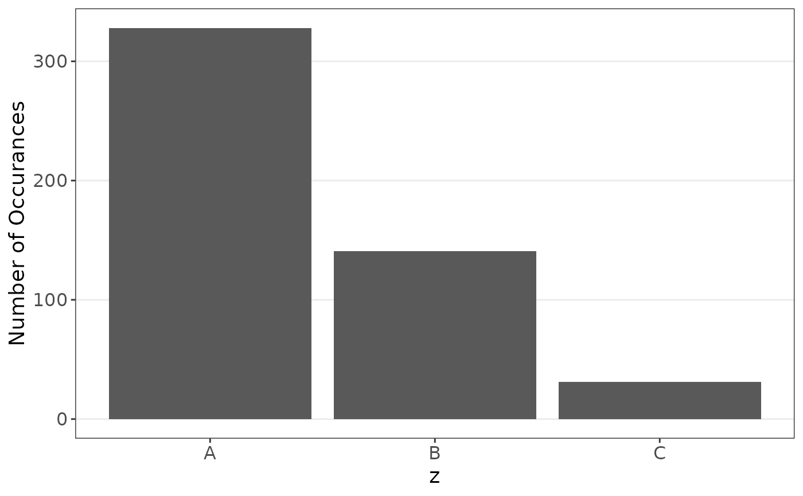

Overview and Setup
In this vignette, we explore the use of this package with simulated data. The function has four options, ‘simple’, ‘stratify’, ‘sliding’, and ‘segment’. We follow these for this vignette.
Simple Permutation
Consider a simple data set as generated below.
set.seed(12345)
n <- 100
data_simple <- data.frame('y'=rep(NA,n),
'x'=rnorm(n),
'z'=rexp(n))
outliers <- runif(3,1,n)
data_simple[outliers,'x'] <- 25*data_simple[outliers,'x']
data_simple[outliers,'z'] <- 10*data_simple[outliers,'z']
errors <- rnorm(n,0,5)
errors[outliers] <- 10*errors[outliers]
data_simple$y <- 1 + 2*data_simple$x - 3*data_simple$z + data_simple$x*data_simple$z + errorsSuppose we are interested in the regression . This can be codified as follows, noting that the first value of the output data.frame is the estimates.
The model on the original data is computed.
set.seed(12345)
simple_function(data_simple)
#> Estimate Std. Error t value Pr(>|t|)
#> (Intercept) 2.219431 0.67733701 3.276700 1.462497e-03
#> x 1.979461 0.54657468 3.621575 4.700884e-04
#> z -3.889885 0.23856433 -16.305391 2.059537e-29
#> x:z 1.027983 0.02839339 36.205003 9.089283e-58This simulation returns value which are similar but are definitely different from the true values This can be resampled as follows.
set.seed(12345)
res <- resample_function(data_simple, simple_function)
res$estimates
#> estimates sd lowerNorm upperNorm lowerResamp upperResamp
#> 1 1.4913547 0.9644652 -0.3989623 3.381672 -0.4892050 3.218052
#> 2 1.9859832 0.6215633 0.7677415 3.204225 0.9410143 3.367920
#> 3 -2.9899624 0.8643272 -4.6840127 -1.295912 -4.1167781 -1.414524
#> 4 0.9763641 0.2702915 0.4466026 1.506126 0.1939155 1.241718The resampling returns better estimates.
Statified Permutation (TODO::UPDATE)
Consider a stratified data set as generated below.
set.seed(1234)
n <- 500
data_strat <- data.frame('y'=rep(NA,n),
'x'=NA,
'z'=sample(c('A','B','C'),size=n,replace=TRUE,prob=c(0.65,0.3,0.05)),
'w'= rnorm(n,75,50))
data_strat[data_strat$z=='A',"x"] <- rnorm(length(data_strat[data_strat$z=='A',"x"]),40,15)
data_strat[data_strat$z=='B',"x"] <- rnorm(length(data_strat[data_strat$z=='B',"x"]),60,25)
data_strat[data_strat$z=='C',"x"] <- rnorm(length(data_strat[data_strat$z=='C',"x"]),100,25)
data_strat$y <- 10 + 0.1*data_strat$x + rnorm(n,sd=10)We see major in balance is the groups
boxplot_strata(data_strat,'z')
Suppose we are interested in the following regression model.
The model on the original data can be computed.
set.seed(1234)
strat_function(data_strat)
#> Estimate Std. Error t value Pr(>|t|)
#> (Intercept) 9.576796108 1.274266764 7.5155347 2.675532e-13
#> x 0.088091571 0.024632271 3.5762667 3.827606e-04
#> zB 1.349345740 1.145474836 1.1779794 2.393708e-01
#> zC 0.737367180 2.461056999 0.2996140 7.645974e-01
#> w 0.004762205 0.008959238 0.5315413 5.952822e-01This simulation returns value which are far different from the true values, This can be resampled as follows.
set.seed(1234)
res <- resample_function(data = data_strat, fn = strat_function, method='stratify',
strata='z', size=200)
res$estimates
#> estimates sd lowerNorm upperNorm lowerResamp upperResamp
#> 1 9.08707600 1.88666823 5.38927422 12.78487778 5.27009068 12.93825899
#> 2 0.08118627 0.03201022 0.01844740 0.14392514 0.01635651 0.14423803
#> 3 1.58227032 1.91224754 -2.16566599 5.33020663 -1.94310253 5.33491976
#> 4 1.37844582 2.77982057 -4.06990239 6.82679403 -4.14630669 7.04251949
#> 5 0.01469081 0.01452382 -0.01377535 0.04315696 -0.01452351 0.04271284The resampling returns better estimates.
Dependent (Sliding / Segment) Permutation
Consider a dependent data set as generated below.
set.seed(1234)
n <- 500
burnin <- 500
data_ts <- data.frame('Y'=rep(NA,n+burnin),
'X'=rnorm(n+burnin))
for(i in 1:(n+burnin)){
if(i>5){
data_ts$Y[i] <- data_ts$X[i] + sum(seq(5,3,-0.5)/10*data_ts$X[i-1:5]) + rnorm(1)
}else{
data_ts$Y[i] <- data_ts$X[i] + rnorm(1)
}
}
data_ts <- data_ts[-(1:burnin),]We could resample as follows.